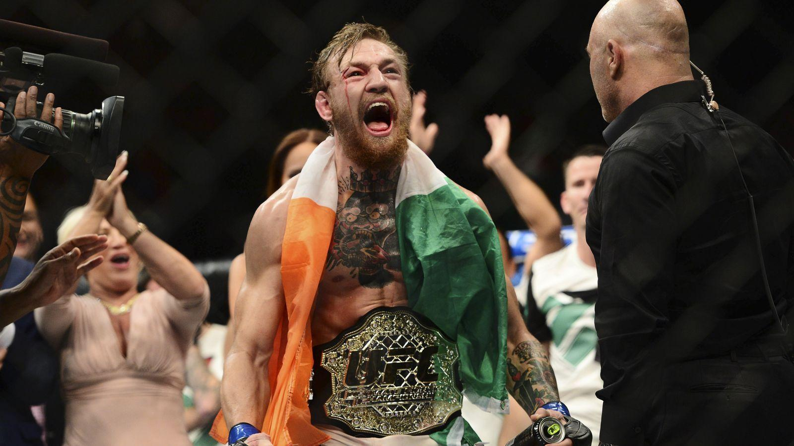

Connor McGregor, 2018
Conor Anthony McGregor (Dublin, 14 de julho de 1988) é um lutador irlandês de artes marciais mistas. É conhecido pelas provocações que faz aos seus oponentes e seu estilo extravagante. "The Notorious", como é apelidado, conquistou o título do UFC nocauteando José Aldo em apenas 13 segundos.